Part A.1
Shooting the pictures
Three sets of photos, each taken from one spot while turning the camera.
I took all of these from a rooftop terrace at sunset with my iPhone 14 Pro Max. For each set I stood in one place and turned the phone between shots, so the camera's direction changes but its position barely does. That's the case where a homography is the right model for how one photo maps onto the next.
The campus set is at 2x zoom and the other two are at 1x. Neighboring shots overlap by about 55 to 65 percent. I kept the low wall of the terrace out of the mosaics. It's only a meter or so from the camera, so it shifts a lot when the lens moves a few centimeters, and no homography can line it up.
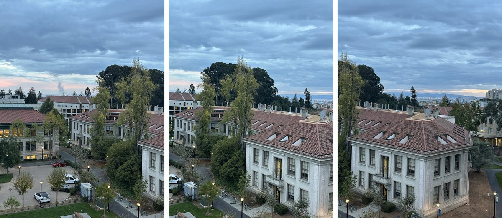
campus · 2x zoom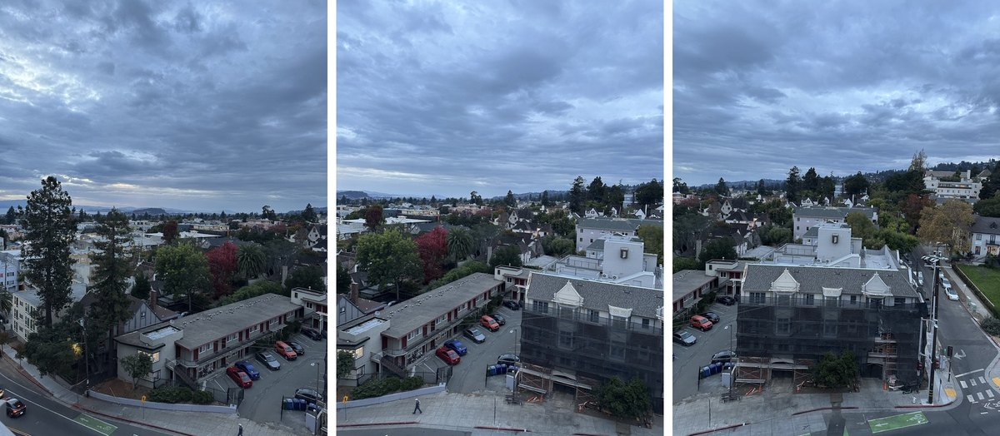
street · 1x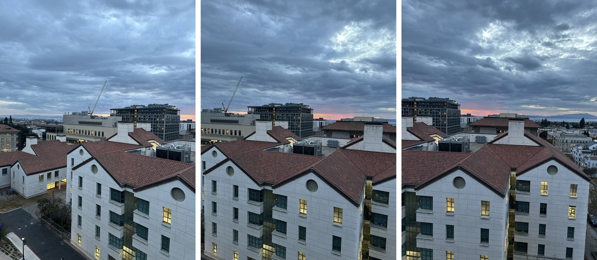
gables · 1xPart A.2
Recovering homographies
Solving for the 3 × 3 matrix that maps one photo onto the next.
A homography maps a point (x, y) in one image to (x′, y′) in another. In homogeneous coordinates it's a 3 × 3 matrix H, with [x′, y′, 1] equal to H [x, y, 1] up to scale. Since the scale doesn't matter, I fix the bottom right entry to 1, which leaves 8 unknowns:
y′ = (d x + e y + f) / (g x + h y + 1)
Multiplying both sides by the denominator makes each equation linear in the unknowns. So every correspondence gives two rows of a linear system A h = b, with h = (a, b, c, d, e, f, g, h):
[0, 0, 0, x, y, 1, −x y′, −y y′] · h = y′
Four points give exactly 8 equations, so H would fit them perfectly, including any error in where they were placed. I used 10 to 12 points per pair and solved the overdetermined system with least squares (np.linalg.lstsq). To apply H to points, I add a 1 to each point, multiply, and divide by the third coordinate to get back to pixels.
Correspondences
I clicked points on each pair with a small matplotlib tool. My first clicks were bunched up in the middle of the overlap, which pins H down there but lets it drift everywhere else. So with AI help I snapped my clicks onto the exact corners they were on and added points on sharp corners spread over the whole overlap, staying off the sky, trees and people. The rectangle corners in part A.3 were placed the same way.
The reprojection error is how far H puts each point from its match in the other photo. It's under a pixel on average for every pair, in the 900 × 1200 images the code works with:
| mosaic | pair | points | mean error | worst |
|---|---|---|---|---|
| campus | 7467 → 7469 | 11 | 0.37 px | 0.79 px |
| campus | 7469 → 7471 | 12 | 0.39 px | 0.83 px |
| street | 7496 → 7497 | 11 | 0.97 px | 2.21 px |
| street | 7497 → 7498 | 11 | 0.51 px | 1.10 px |
| gables | 7505 → 7506 | 10 | 0.78 px | 1.66 px |
| gables | 7506 → 7507 | 11 | 0.55 px | 0.93 px |
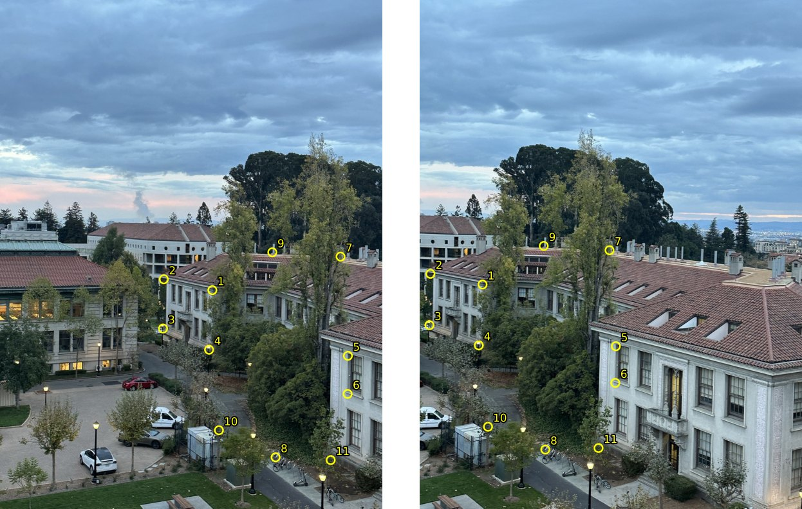
campus · 7467 → 7469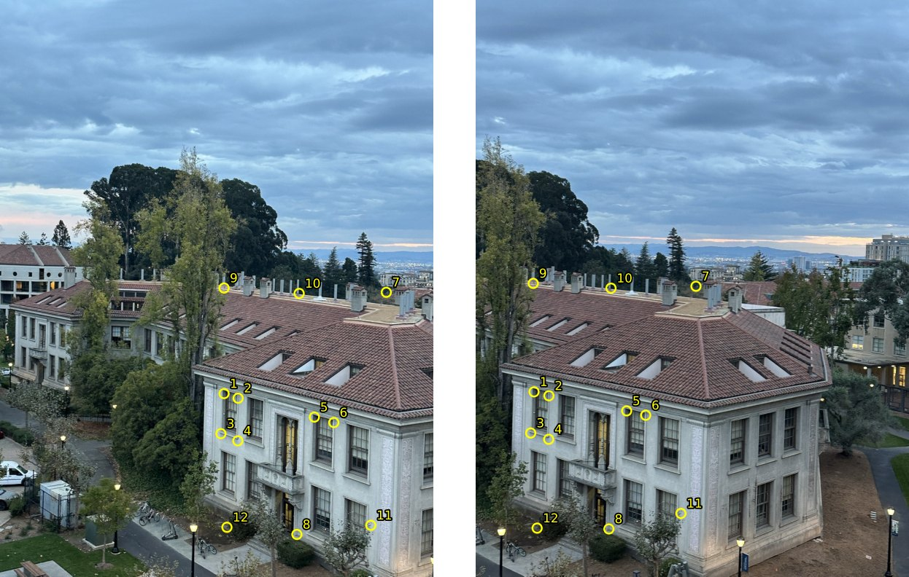
campus · 7469 → 7471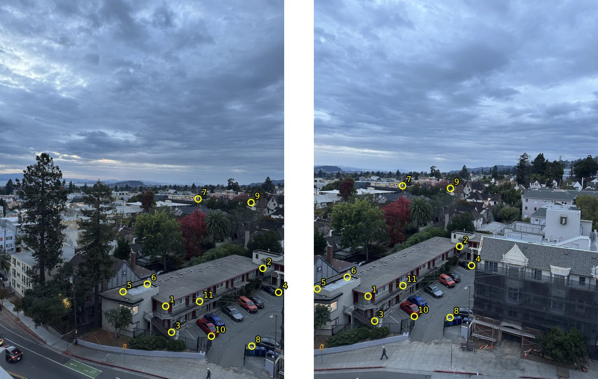
street · 7496 → 7497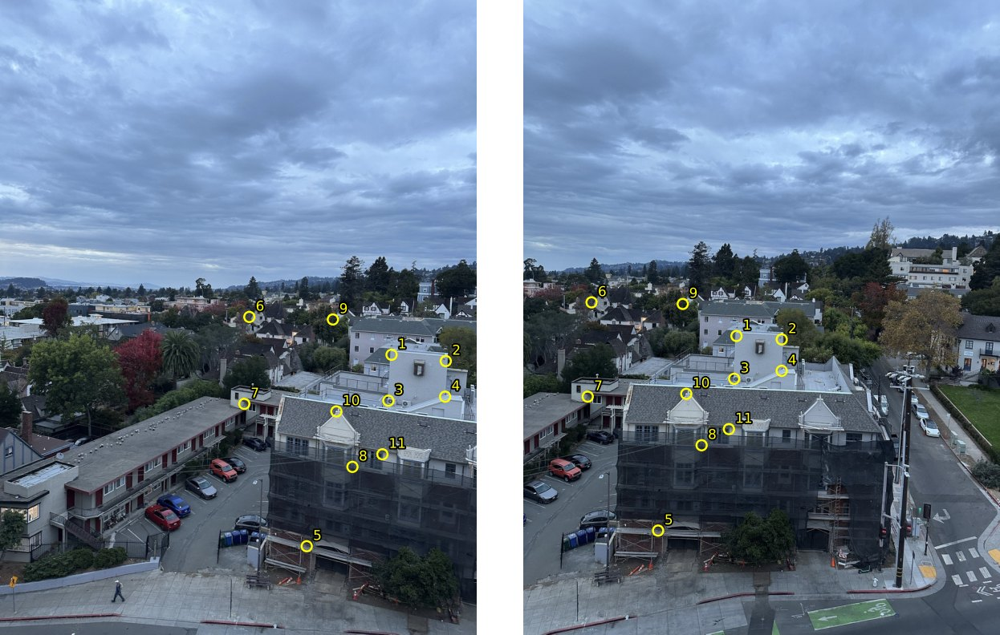
street · 7497 → 7498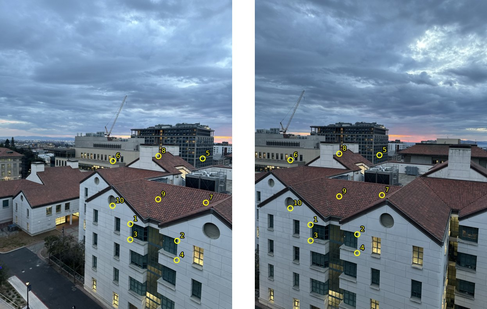
gables · 7505 → 7506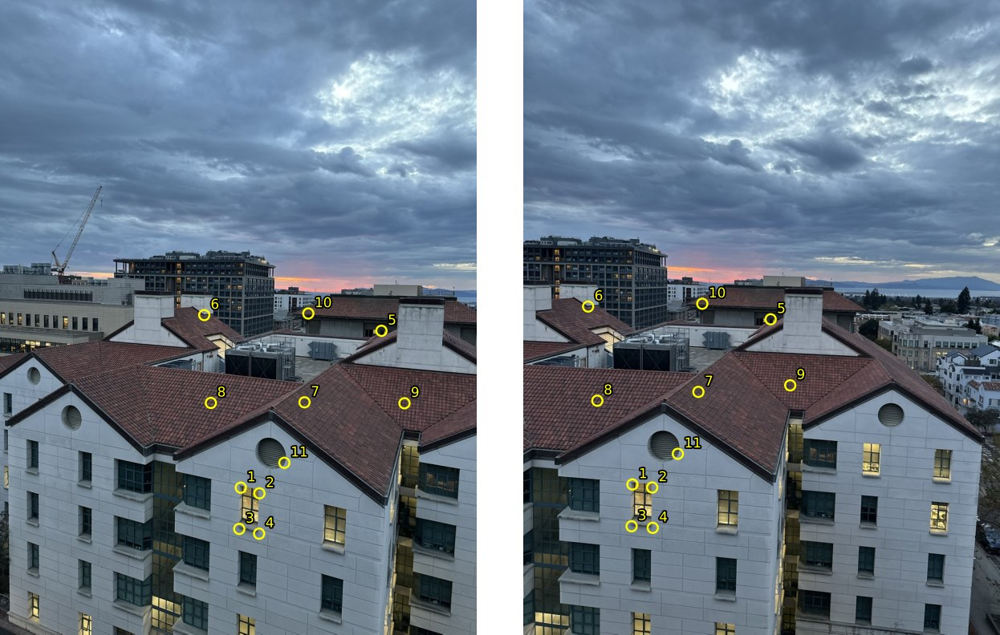
gables · 7506 → 7507The system for one pair
Here is the full system for the first campus pair (7467 → 7469, 11 points, so 22 equations), and the H that least squares gives for every pair.
The top right entry is the shift: about −420 pixels between campus shots, since turning right slides the scene left. The bottom row is the perspective part. It looks tiny, but x goes up to about 900, so the denominator changes by around 20 percent across the photo.
Part A.3
Warping and rectification
Inverse warping with nearest neighbor and bilinear interpolation, tested by making two slanted rectangles square on.
To warp an image by H, I go backwards. For every output pixel I compute where it came from in the input with H−1 and look up the color there. Going forwards (sending every input pixel through H) leaves holes wherever H stretches the image. Going backwards gives every output pixel exactly one value.
The size of the output comes from sending the input's 4 corner pixels through H and taking the smallest box that holds them. A homography keeps straight lines straight, so the corners are always the extremes. Output pixels whose source lands outside the input stay black, and the warp also returns a mask of which pixels were inside, so the blending in part A.4 can ignore the rest.
The two warps only differ in how they read a color at a position that isn't a whole number, like (412.7, 300.2). Nearest neighbor rounds to the closest pixel. Bilinear blends the 4 pixels around the point, each weighted by how close the point is to it: (1 − fx)(1 − fy) for the top left and so on, where fx and fy are the fractional parts. The 4 weights always add to 1. Both work on any number of channels, which part A.4 uses to warp the blending weights along with the photo.
Rectification
To test the warps I rectified two photos. I took the 4 corners of something I know is a rectangle, mapped them to a rectangle with the right proportions, and let computeH and the warp do the rest. For the facade I used the grid of 6 windows on the side of the building, which I estimated at about 4:5 wide to tall. For the floor I used a metal access hatch, a little wider than it is long. Rectifying the floor sends the horizon off to infinity, so for these I only warp a box around the rectangle plus some margin.
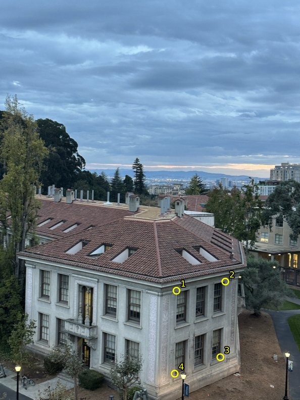
input + corners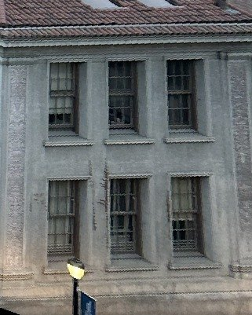
nearest neighbor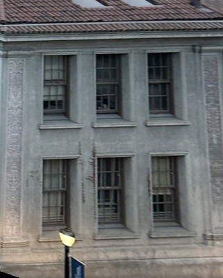
bilinear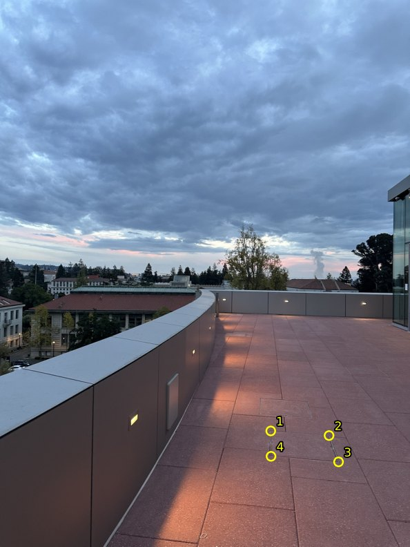
input + corners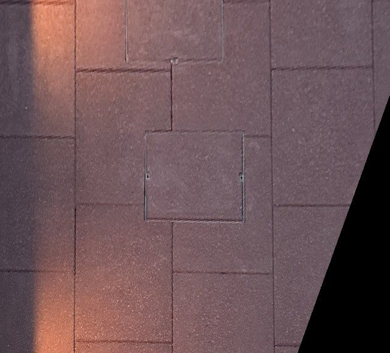
nearest neighbor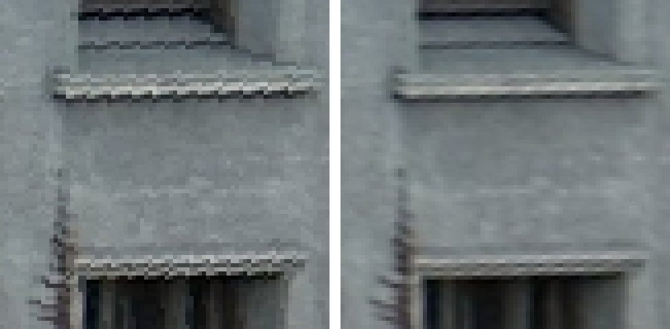
6x zoom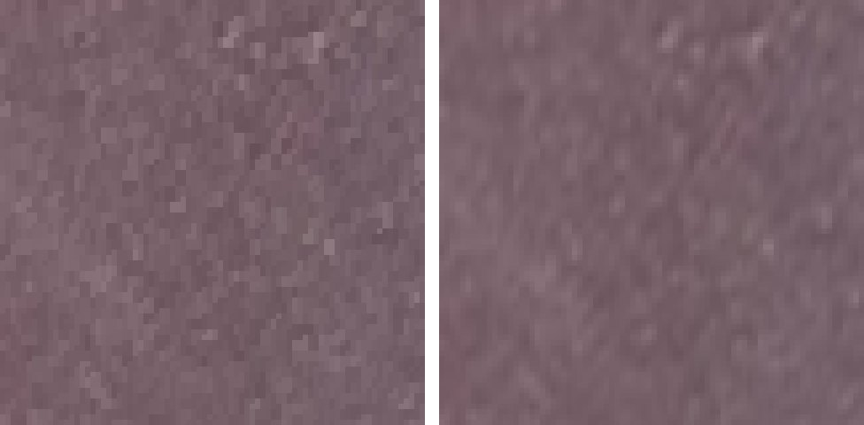
6x zoomThe lines that should be straight and parallel come out that way: the window rows and columns in the facade, and the seams between the floor slabs. Nearest neighbor turns edges into stairs, which is easiest to see on the window sills. Bilinear keeps them smooth and is only a little softer. It does 4 lookups plus the weights for every pixel instead of 1, and took about 2.4x as long:
| photo | output | nearest neighbor | bilinear |
|---|---|---|---|
| facade | 321 × 401 | 6 ms | 14 ms |
| tiles | 641 × 580 | 19 ms | 48 ms |
I used bilinear for the mosaics. The speed difference is small and the jagged edges would show up in every overlap.
Part A.4
Mosaics
Warping every photo into the middle photo's frame and blending the overlaps.
Each mosaic is 3 photos. The middle one stays put and the other two get warped into its frame. H0 already maps the left photo onto the middle one. H1 maps the middle photo onto the right one, so the right photo uses its inverse. With more photos the steps chain, with the first step on the right: photo 0 into photo 2's frame would be H1 H0.
I warp every photo's corners to find one canvas that holds all of them, then warp each photo onto that canvas with the bilinear warp. Every warped photo is the size of the whole canvas, black outside its own area, and its pixels line up with the others.
For blending, each photo gets a weight that's 1 at its center and falls to 0 at its edges: the distance to the nearest edge, divided by its max (what bwdist gives for a rectangle). The weights get warped along with the photo as a 4th channel. Then every pixel of the mosaic is the weighted average
so in an overlap one photo fades out as the next fades in. Dividing by the sum of the weights keeps the overlaps from coming out brighter than the rest. Where no photo has any weight, the mosaic stays black.
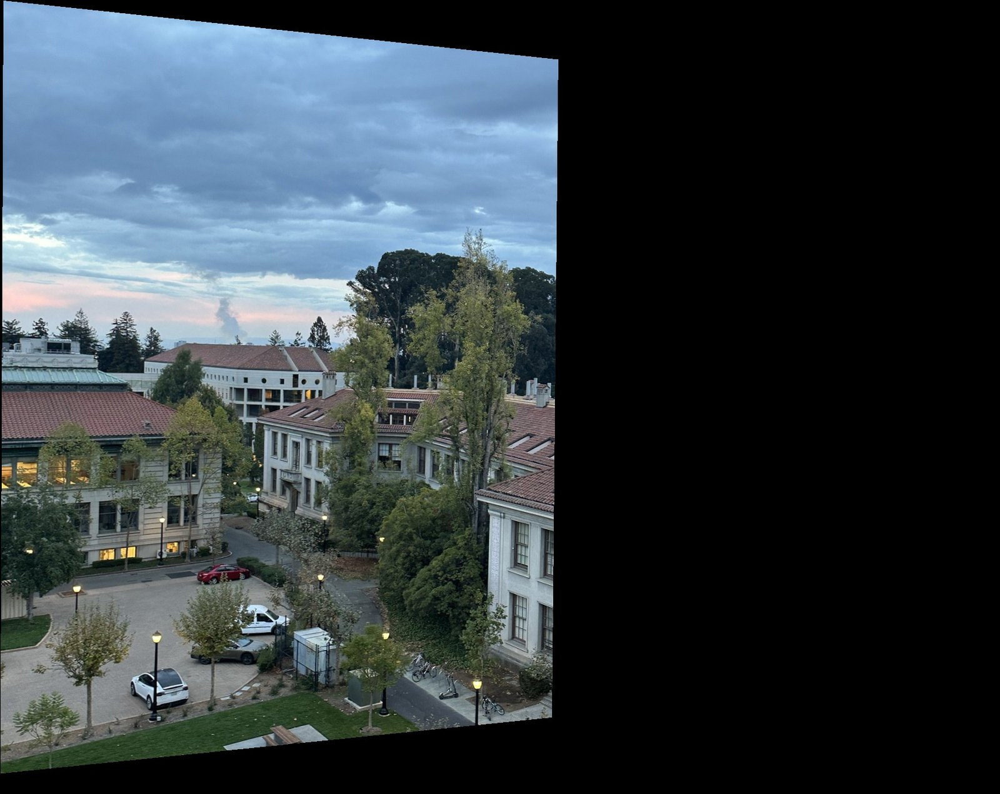
7467 warped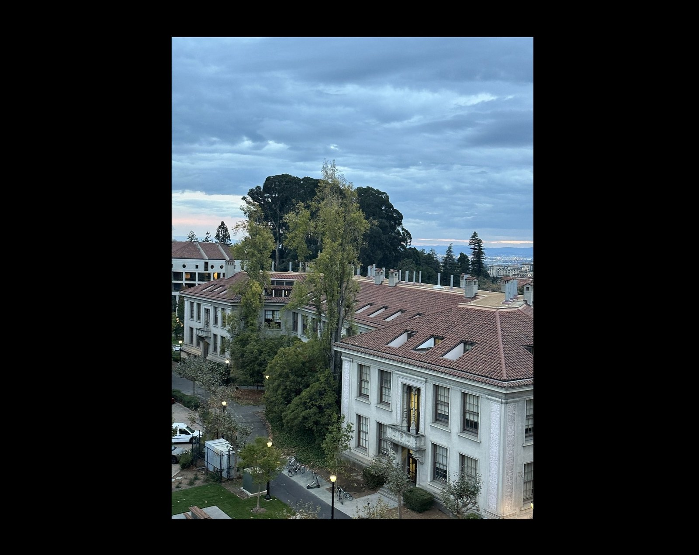
7469 (reference)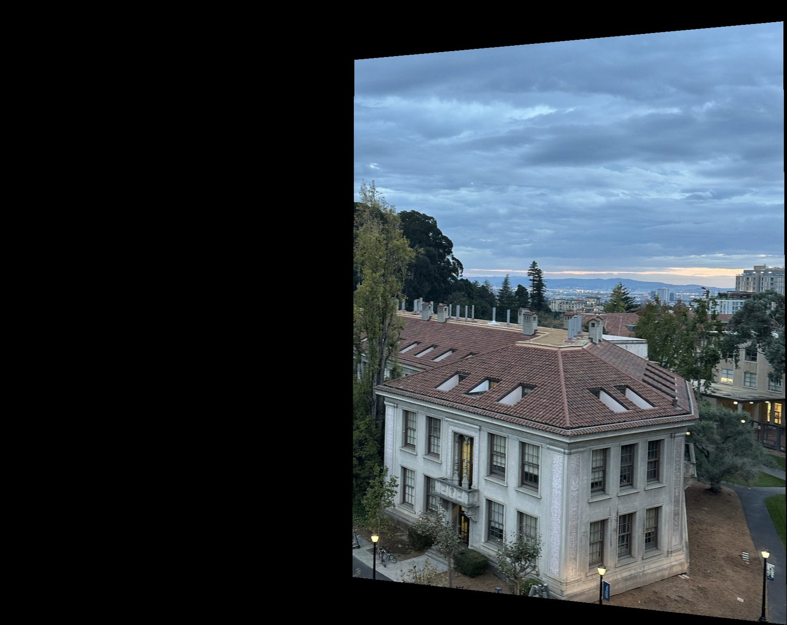
7471 warped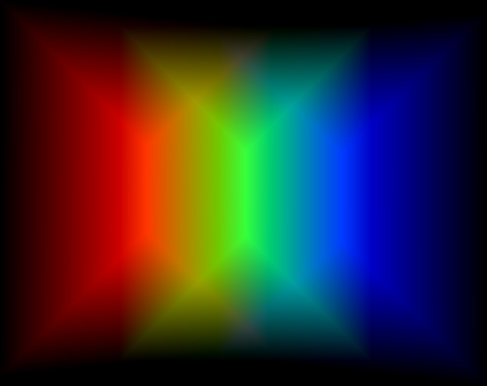
weightscampus
Three shots at 2x zoom of the buildings below the terrace.
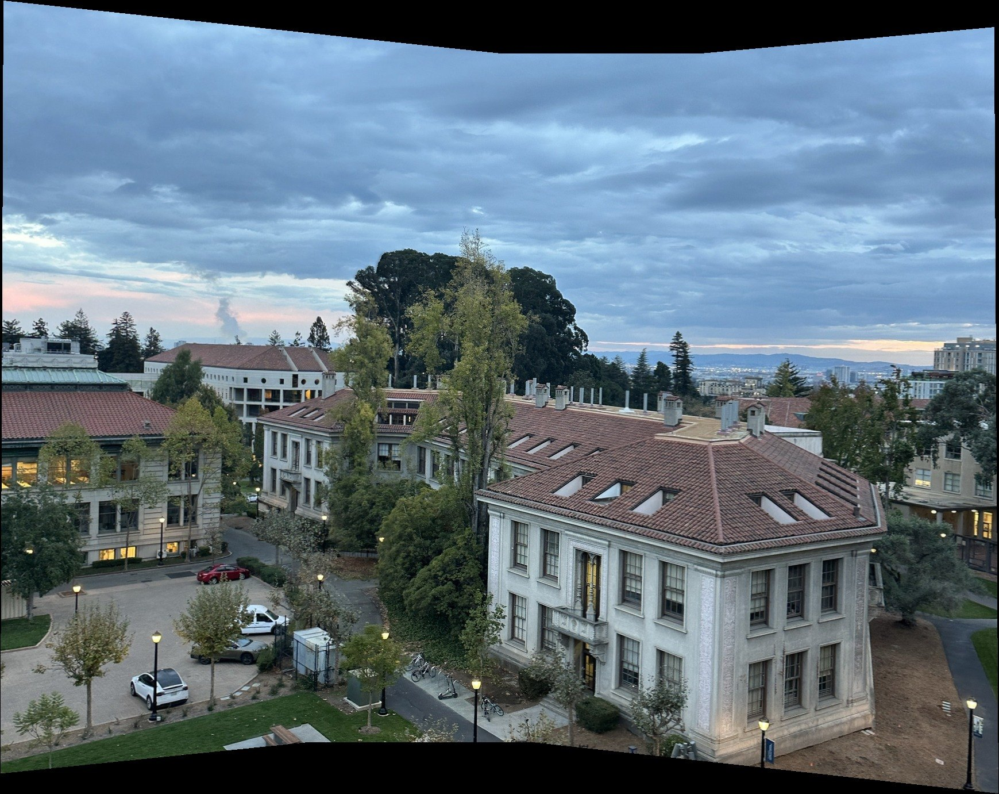
mosaicstreet
The street and intersection below, at 1x.
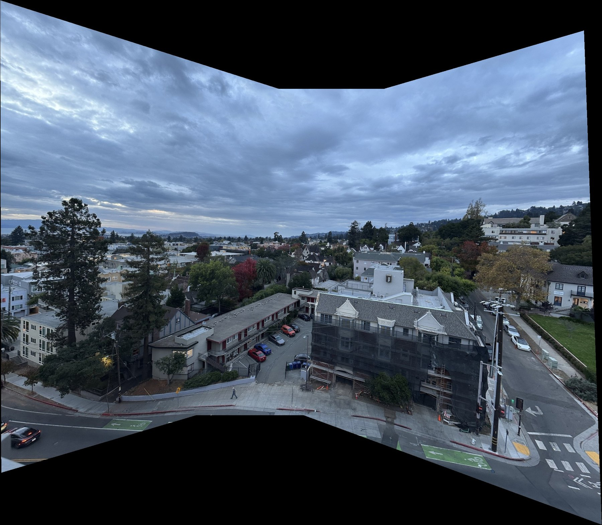
mosaicgables
The white building with the round windows, and the city behind it, at 1x.
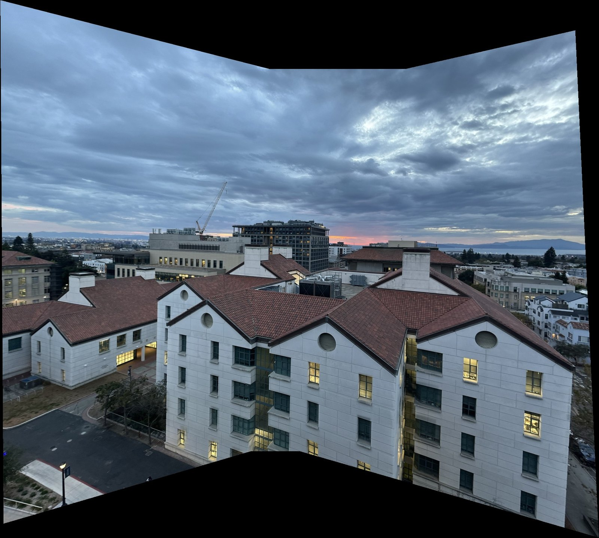
mosaicPart A.4
Feathering vs two-band blending
Why the final mosaics use a two-level Laplacian pyramid instead of a plain weighted average.
Pasting each photo on top of the last shows hard seams, mostly in the sky, because each shot came out a little brighter or darker than the one before. Feathering gets rid of the seams. But anything that doesn't line up exactly between two shots shows up twice, since the average has a faint copy from each photo. In the gables mosaic, the crane is doubled.
So I also did two-band blending, a Laplacian pyramid with two levels. Each photo is split into a low band (a Gaussian blur with σ = 2) and a high band (the photo minus the blur), and the two bands are blended differently:
Low band: feathered like before. Color and brightness fade smoothly across the overlap, so there's no seam. High band: at each pixel it comes only from the photo with the biggest weight, so edges are never averaged and nothing doubles. Adding the two bands back together gives the final mosaic. When I blur each photo, I only blur its own pixels (and divide by the blurred mask), so the black around it doesn't darken its edges.
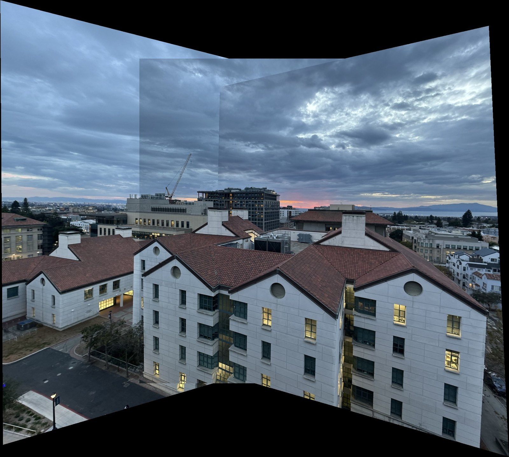
overwrite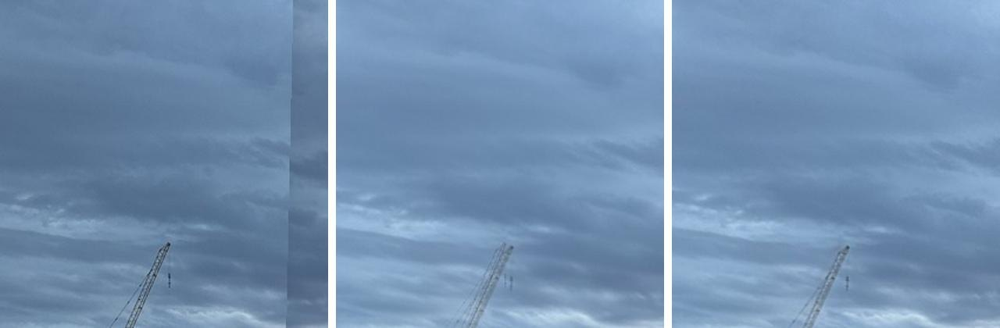
zoom on the craneWhy two bands work
Each band needs a different kind of transition. Coarse things like brightness need a wide, gradual one, or you see a jump. Fine things like edges need a sharp one, or two slightly misaligned copies get averaged into a ghost. Feathering gives everything a wide transition and overwrite gives everything a sharp one. Two bands give each its own.